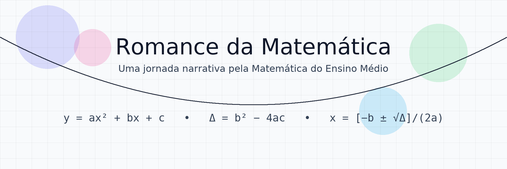

Uma jornada narrativa e visual pela Matemática do Ensino Médio — com exemplos guiados, minidesafios e aplicações do dia a dia.
Romance da Matemática: Aventuras no Ensino Médio é um site de aprendizagem por histórias (storytelling1) e resolução passo a passo. Cada capítulo apresenta um enredo curto, conceitos-chave, exemplos resolvidos, minidesafios e exercícios com gabarito.
🧑🏫 Para quem é?
Estudantes do Ensino Médio, vestibulandos e professores que buscam exemplos claros, material reutilizável e sequências didáticas prontas para sala de aula.
- 📘 Leia a história de abertura do capítulo para ativar a intuição.
- 🧑💻 Estude os exemplos com justificativas linha a linha.
- 🧠 Tente os minidesafios antes de olhar o gabarito.
- 🔍 Compare soluções no R/Excel/Python quando indicado.
🗺️ Mapa rápido
- ✨ Capítulo 1 — Função Quadrática → acessar
- Motivação, gráfico da parábola, vértice e concavidade
- Zeros, forma canônica e interseções
- Problemas contextualizados e minidesafios
- Motivação, gráfico da parábola, vértice e concavidade
- ✨ Coleções temáticas
“Matemática não é sobre números, equações, cálculos ou algoritmos; é sobre compreensão.”
— William P. Thurston2
“A matemática é a arte de dar o mesmo nome a coisas diferentes.”
— Henri Poincaré3
“A espécie humana pensa por metáforas e aprende por meio de histórias.”
— Mary Catherine Bateson4
❓ Perguntas frequentes (FAQ)
Posso reutilizar materiais?
Sim, desde que respeitada a licença do repositório.
Onde encontro os arquivos-fonte?
No GitHub do projeto (link no rodapé do site).
Como sugerir melhorias?
Abra uma issue5 no repositório — sugestões são muito bem-vindas!
📚 Créditos e referências
- 💡 Inspiração didática: aprendizagem ativa, resolução guiada e narrativa.
- 🧰 Ferramentas: Quarto (📄), R (📊), Python (🐍), LaTeX (🧮)
Este site utiliza componentes de interface do Bootstrap (via tema cosmo), imagens autorais e recursos educacionais abertos quando indicado.
🆕 Últimos Posts
Abaixo estão os conteúdos mais recentes publicados.
- 🧑🏫 Sobre
- Sobre o Projeto e Sobre Mim
- 📘 Capítulo 3 — A Jornada dos Conjuntos
- 📘 Capítulo 2 — O Reino dos Números
- 📘 Capítulo 1 — A Função do 2º Grau
Esta seção é atualizada automaticamente a cada nova publicação.
Romance da Matemática: Aventuras no Ensino Médio – Uma jornada narrativa e visual pela Matemática do Ensino Médio
Criado por Romance da Matemática: Aventuras no Ensino Médio com ❤️ e código.
🔗 Links Úteis
Notas de rodapé
Storytelling — em português, narrativa (contação de histórias). Usamos o termo em inglês por ser comum na literatura de ensino.↩︎
William P. Thurston, “On Proof and Progress in Mathematics”, Bulletin of the American Mathematical Society 30(2), 1994.
Original: “Mathematics is not about numbers, equations, computations, or algorithms: it is about understanding.”↩︎Henri Poincaré, Science et Méthode (1908).
Original: « Les mathématiques sont l’art de donner le même nom à des choses différentes. »↩︎Mary Catherine Bateson, Composing a Life (1989).
Original: “The human species thinks in metaphors and learns through stories.”↩︎Issue — em português, tópico de acompanhamento (pedido/relato) usado para registrar tarefas e correções no GitHub.↩︎